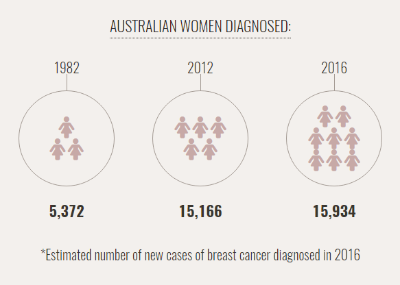

The invitation to free breast screening now covers women up to 74. Everything you need to know about why you should take up our invitation is right here.
Breast Cancer in Australia
Breast cancer is the most common cancer in Australian women. One in eight women will be diagnosed with breast cancer in their lifetime.
However, it’s encouraging to know that thanks to better services and greater knowledge and awareness, fewer women are losing their lives to breast cancer.

More than 75% of breast cancers occur in women 50+.
90% of women who get breast cancer have no family history.
An estimated 2,700 Australian women died from breast cancer in 2014.
Why we're expanding
The risk of breast cancer increases with age. That’s why the age group of women invited for free breast screening has now changed from 50-69 to 50-74.
We’d like more women to participate and continue participating in our program. Quite simply, encouraging more women to participate will detect more breast cancers and save more lives.
Expanding the invitation to include women 50-74:
- will deliver up to 220,000 additional breast screening services over the next four years
- will potentially detect an additional 600 breast cancers each year.

Why breast screening works
Done regularly, breast screening is an excellent way to detect breast cancer in its early stage, even before you see or feel something. By getting screened every two years you’re giving yourself the best chance for early detection.
Early detection is better because:
- the earlier you detect breast cancer the better your chance of beating it
- it means less invasive, more effective treatment
- with early detection and treatment, nine out of 10 women survive.
Hear their stories
At your mammogram
It’s likely that most women reading this will have had at least one mammogram, and will be familiar with this very simple process. However, if you’re not, here’s what you can expect:
Early detection is better because:
A BreastScreen Australia representative will collect your forms and explain what will happen.
A female radiographer will take you to the X-ray room.
You will be asked to remove your top in private.
When you are ready the radiographer will take at least two X-rays of each breast.
The X-ray machine will firmly press each breast to get the best X-ray. The pressing may be uncomfortable but any discomfort usually only lasts around 10 seconds.
Talking to your radiographer
Talking to your radiographer is important, especially if you have any concerns. If you feel any discomfort during your mammogram you should tell your radiographer. You can ask for the procedure to stop at any time.